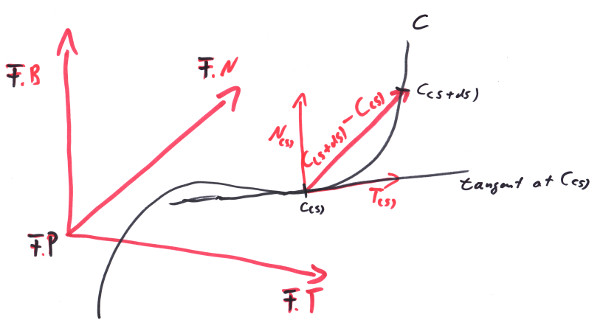
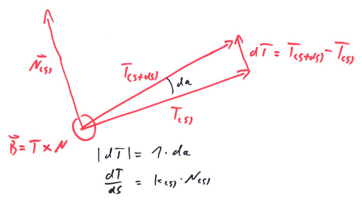
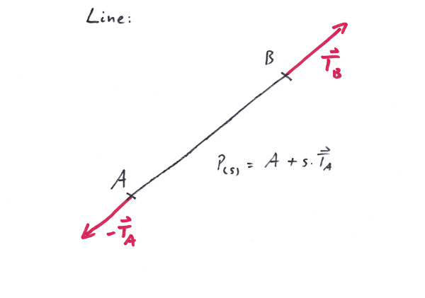
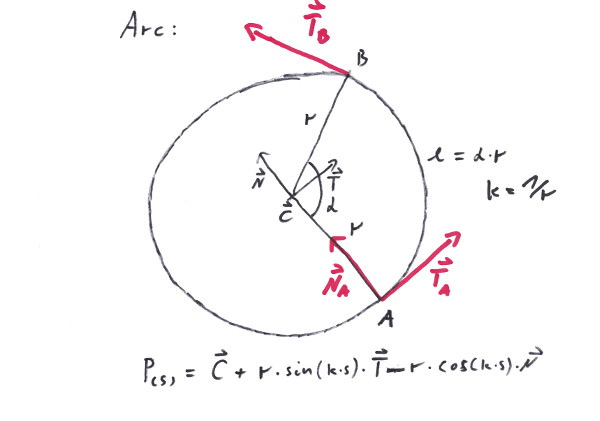
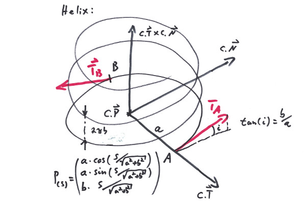
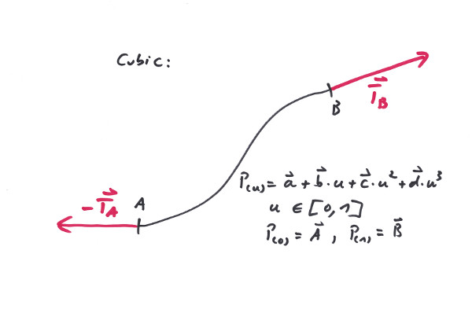
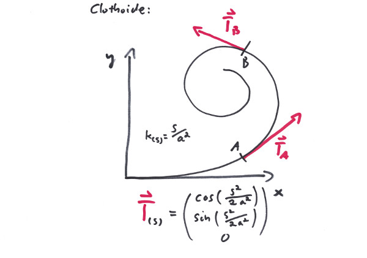
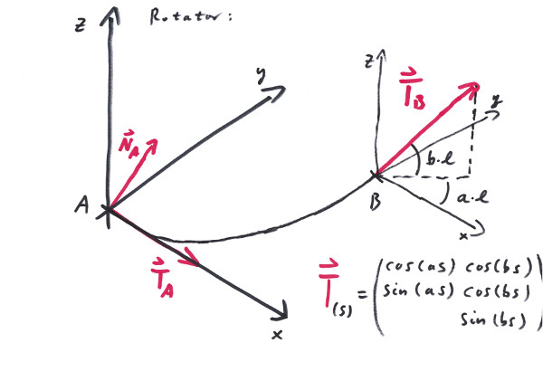
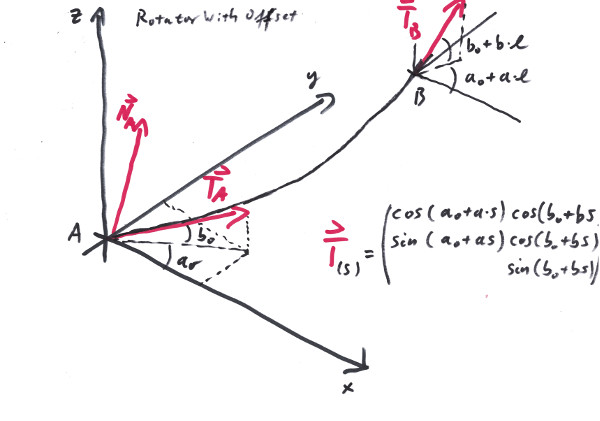
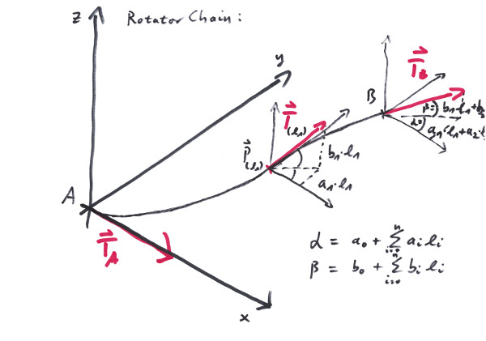

"Do not disturb my curves!"
- Archimedes
As far as we are concerned, a Curve is a path in three dimensional euclidean space so that it can be written as:
Position<Length> C(s) = { x(s), y(s), z(s) };
with x, y, z being functions (from s) of Length to Length that can be differentiated at least three times. This makes C a function (from s) of Length to Position<Length>. Note that we assert that the parameter s is a valid Length. With this we want to make clear that s measures the length of the curve up to that point:
|C'| = |dC/ds| == |C(s + ds) - C(s)| / ds == ds/ds == 1;
for reasonable small ds and everywhere along the curve (the single ''' stands for the first derivative). Or, for those of you English kniggits, who are not afraid of an integral:
s1 s1 s1
Length L = S |C'(s)| ds == S |dC/ds| ds == S ds == s1 - s0;
s0 s0 s0
From everywhere (s0) to anywhere (s1) inside the valid range of the curve and L being the total length along that curve segment. The above written dC = C(s+ds) - C(ds) is a secant Vector<Length> whiches direction would approach the tangent of the curve at s if ds approaches 0.
Therefore we define the unit vector:
Vector<One> T(s) = dC(s)/ds;
to point along the tangent of our curve at parameter s. Note that it is of unit length.
dT/ds = d²C(s)/ds² = C''(s);
The change of T along the proceeding curve would no doubt be a pure rotation of T, since T stays to be of unit length along the whole curve. So the change dT will be perpendicular to T at least for small enough ds. Let's call this direction in which the tip of T moves 'N', then:
dT/ds == κ(s)*N(s);
With N being defined to be a unit vector and κ(s) >= 0 being defined to take care that |N(s)| is so. κ(s) then happens to be calculated by κ(s) = |C''|. N(s) would be C''/|C''|. So these values are nothing we couldn't calculate, since we asserted that our Curve C would be differentiable at least three times (only two used, one to go). In fact κ(s) is called the curvature of the curve at s and it happens to be the rotation angle, the vector T rotates per parameter length. It actually rotates around B = T % N, since with from the following image one sees, that |dT| = 1 * da is the rotational angle. That makes also κ(s) == |κ(s)| == |κ*N| == |dT/ds| == da/ds an angle but related to the progress of s.
B is per definition orthogonal to T and N and since they are orthogonal unit vectors themselves, B is also.
dB/ds == d(T % N)/ds
== dT/ds % N + T % dN/ds
== κ*N % N + T % d(C''/κ(s))/ds
== T % (C'''/κ - C''/κ² * dk/ds)
== T % (C'''/κ - N/κ * dκ/ds)
== ((T % C''') - B * dκ/ds) / κ;
It might not be obvious, but think about it this way: dB/ds is orthogonal to T: since T is in the cross product, so the cross product is orthogonal to T; B is orthogonal to T anyway, so adding two vectors orthogonal to T gives a result orthogonal to T. Hence it lays in the B/N plane. Also B is a unit vector and stays so along the whole curve, so dB/ds has no direction in B itself, which would not only rotate it, but change its length (let not irritate you by the B * dκ/ds term, it has to be compensated by the subtraction). So dB/ds can only have the direction of N! Thus we have to be able to write it this way:
dB/ds = -τ(s) * N(s);
with some proper t(s) and the minus - why not? What would that t(s) - let us call it torsion - be? Multiplied by N, we see:
-τ(s) == dB/ds * N
== ((T % C''') - B*dκ/ds) / κ * N
== (T % C''') / κ * N
== (C' % C''') * C'' / κ²;
τ(s) == (C''' % C') * C'' / κ²;
That funny %* - thing on the right side is the triple product of which can be proven, that: (V3%V1)*V2 == (V1%V2)*V3, (see Chapter 2) so:
τ(s) == (C' % C'') * C''' / κ²
== (C' % C'') * C''' / C''²;
which might be a little bit complex, but can be perfectly computed, since we have the spat vector library at our fingertips. Now that we have dT/ds and dB/ds, what would dN/ds be?
dN/ds == d(B % T) / ds == dB/ds % T + B % dT/ds
== -τ(s)*N(s) % T + B % κ(s)*N(s)
== τ(s)*B(s) - κ(s) * T;
Easy peasy. Let's summarize our results so far: For any Curve C(s) parametrized by its own arc length s and being available up to the third derivative, we can define a comoving Frame, where
F(s).P = C;
F(s).T = C';
F(s).N = C''/|C''|;
F(s).B = (C' % C'') / |C''|;
AnglePerlength κ(s) = |C''|;
AnglePerlength τ(s) = (C' % C'') * C''' / C''²;
The vectors are unit vectors and orthogonal to each other and they are this at every point along our curve. Furthermore, their changes follow the following differential equations:
dT/ds == +κ * N;
dN/ds == -κ * T +τ * B;
dB/ds == -τ * N;
This is a major result, originally discovered by two french guys, monsieur Frenet and monsieur Serret, some 160 years ago.
κ is a rotation of the whole Frame around B since we defined it that way. But one can see it also from the equations, since it doesn't affect B in the third one - the only vectors not affected by a rotation are those along the axis of the rotation; τ is a rotation around T for the same reason. The κ and τ are scalars calculated from vector equations; they are intrinsic properties of the curve itself and will not depend on the coordinate system.

In the Unreal project you'll find a level called: traxBookChapter3_ACurve (see Appendix E, about how to install). It shows an arbitrary curve that runs in three dimensions and a Frame at the start of it. Play the level and note, how the tangent T is always pointing along the curve, while the main normal N is pointing in the direction of the change of T. The frame is constantly rotating around the curve.
There is sometimes the question, why κ can not be negative, like τ very well can. This seems to be particular usefull in order to bend a curve to the other side. But other than the torsion, the curvature 'has no direction'. This is because it can have any direction orthogonal to T, which was, why we had to invent the vector N, which then became the direction of the curvature. Locally 1/κ(s) would be the (of course positive) radius of a circle, that would meet the curve in s with the same curvature and tangent; N would point to its center.
If κ == 0, the above formulas break down somehow. The level traxBookChapter3_ACurveWithCurvatureZero shows an example of the situation: dT/ds would become zero, which means we not only go but stay on a straight line locally. This makes our choice of N arbitrary and can lead to sudden 'uncontinuos redefinitions' of N along a curve. We provide a method Curve::ZeroSet() for calculating the parameters of these points. If κ stays 0 for more than one consecutive point along the curve, however we define it, we would tend to stick with an N, and therefor an B. This would mean dB/ds == 0 and therefore from the third Serret/Frenet equation: τ == 0, but this is not really neccessary.
The TNB-Frame sometimes makes people identify the B vector with some Up direction. This is very tempting, since a curve that completely runs inside a plane would be one that if T and N are inside that plane once, to make them stay the dT and dN can not have any component in B direction, which from the second Serret/Frenet equation means τ == 0 and then from the third dB == 0, hence B being constant. Great Up direction! But first this does not work with different planar curves, since each might have its own idea of what is Up, and secondly in general, with nonzero τ the B might happily rotate around the curve in any way imaginable. See the next chapter, about how to maintain a stable Up direction with arbitrary curves.
A Line is the shortest curve that connects two arbitrary points in space. Albeit this is a very powerfull feature, it might turn out to be a little bit cumbersome on the edges as well as in the middle.
When Giotto was asked by the Pope for a sample of his artisanship, he drew a perfect Arc - freehand. The Arc is regarded by many people as the most beautiful of all curves; others worship it because of its capability to avoid obstacles by circumventing them. The Arc is very well able to connect two points, even while maintaining one of the tangents, but the second tangent then would be given - all beauty suffers from limited flexibility. Since the Arc is a plane curve, it performes very poorly when dealing with three dimensions.
The Helix is the first choice when it comes to climbing from one level to another, or - when tilted - to build a looping. It can connect two nearly arbitrarily situated points and albeit it is a little bit restrictive with its tangents, a full loop has two parallel tangents at the ends - a feature that in many situations comes in handy.
The Cubic is a most powerful curve, when it comes to connecting two points and maintaining both tangents. With railways this is an important feature if it comes to close a gap or make a clean change in level, since it can work in all three dimensions. On top of this there exist two parameters that allow to further fine tune the exact path of the curve.On the other hand, since the Cubic maintains very wild ideas about its up direction it is essential to use it in conjunction with a directional twist.
The Clothoid is a curve with linearly (with respect to its arc length) varying curvature. This is a most usefull feature in traffic systems, when it comes to smoothly transition between curves of different curvature. Since it happens to be a plane curve, it is somewhat inflexible if it has to deal with more then two dimensions.
The Rotator is a curve that constantly rotates (with respect to its arc length) in the plane and perpendicular to it. Its strong side is the ability to determine the direction of the start and end tangents as well as its simplicity of concept. It works in a predictable manner especially if the rotation into the up direction stays reasonably small. On the other hand it can be a very cumbersome curve if used for tasks that it aint made for.
 The Rotator raises the question, wether Rotators can be appended to each other, so that the total rotating angles add up in a straightforeward manner. Unfortunately in general the answere is: no. The RotatorChain cures that, since it defines a series of Rotators with respect to the same rotational axes.
